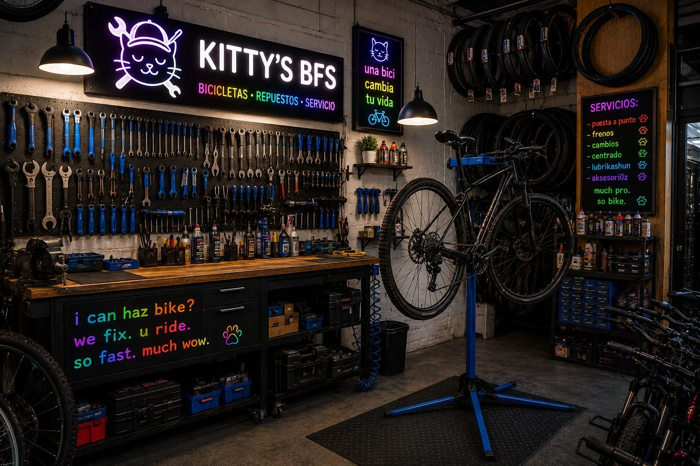

It all started in 2019 when Kitty Whiskers Jpeg — a stray tabby with an unusual talent for tightening bolts — wandered into an abandoned garage on the east side of town. Nobody knows how he learned to use tools. Some say he watched YouTube tutorials. Others say he was just born with it.
Word spread fast. First it was the neighbors, then the whole neighborhood. By 2021, Whiskers had recruited a full crew of mechani-cats, and Kitty's BFS was officially born. No appointment needed — they come to you, anywhere, anytime (after nap time).
Today we are the most purrfessional mobile bike repair service in the city. Our secret? We genuinely love bikes. And tuna. But mostly bikes.

Highly trained. Very fluffy. Extremely professional.
The original mechani-cat. Specializes in gear systems and existential staring. Has never lost a bolt. Has lost several mice.
Former academic turned bike wizard. Wrote his thesis on "The Aerodynamics of Hairballs and Bicycle Drag." Top of his class.
The face of Kitty's BFS. Fluent in 4 meow dialects. Once fixed a flat tire while simultaneously napping. We still don't know how.
Handles all major business decisions from his executive cushion. Approves every repair with a slow blink. Rarely wrong.
The newest member of the crew. Still learning, but already shows incredible promise. Once fixed a derailleur by accident while chasing a screwdriver.
Keeps the workshop atmosphere top notch. Curates the official Kitty's BFS playlist. Strongly believes bikes are repaired faster with lo-fi music playing.
We work at full zoomie speed. Your bike won't wait around while we nap. Well, maybe a little. But then we're very fast.
We don't deliver a bike until it passes the Whiskers Inspection™ — a rigorous sniff test followed by a 3-second stare of approval.
No dragging your bike across the city. We show up at your door, fix everything, and leave without knocking anything off your shelf. Usually.
Let our mechani-cats take care of your bike. No stress. No hassle. Just purring engines and smooth wheels.
Book a Service Now!